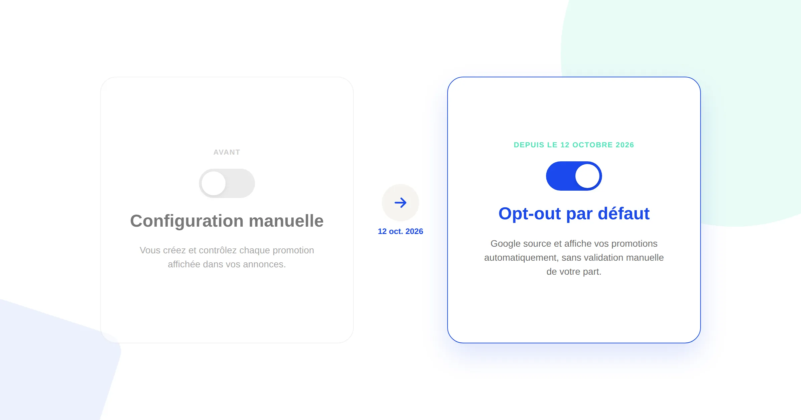
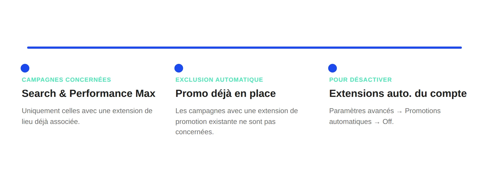

Google Ads : les promotions automatiques passent en opt-out dès le 12 octobre 2026
Google vient de prévenir une partie de ses annonceurs par email : à partir du 12 octobre 2026, Google Ads extrait et affiche automatiquement des promotions tirées de votre propre site dans vos campagnes Search et Performance Max — sans configuration manuelle, et sans que vous ayez rien demandé. C'est un réglage opt-out, pas une fonctionnalité à activer.

Selon l'email envoyé par Google à certains annonceurs — et selon la page d'aide officielle de Google Ads sur les extensions automatisées au niveau du compte — cette fonctionnalité, baptisée « Promotions automatiques », source, valide et affiche des remises et offres trouvées sur votre site, sans aucune configuration de votre part. Le changement du 12 octobre n'est pas l'arrivée de la fonctionnalité elle-même, mais son passage en activation par défaut pour les comptes concernés.
Ce qui ne change pas
La structure de vos campagnes Search et Performance Max reste identique, de même que le système d'extensions (assets) qui les alimente déjà. Les promotions automatiques s'ajoutent à ce système existant, elles ne le remplacent pas : une extension de promotion que vous avez créée et configurée vous-même continue de fonctionner exactement comme avant, et prime sur l'extraction automatique si elle est déjà en place.
Ce qui change vraiment
- L'activation est automatique, pas sur demande. Les comptes concernés sont inscrits par défaut à partir du 12 octobre 2026 — il faut désactiver explicitement le réglage pour ne pas y participer, ce n'est plus l'inverse.
- Seules les campagnes avec extension de lieu sont concernées. Le ciblage se limite aux campagnes Search et Performance Max qui ont déjà une extension de lieu associée, utilisée pour générer des conversions en ligne ou en point de vente.
- Les campagnes avec promotion déjà configurée sont exclues. Si une extension de promotion existe déjà sur une campagne, l'extraction automatique ne s'y applique pas.
- Le réglage se pilote au niveau du compte entier, pas campagne par campagne. Il n'existe pas de contrôle granulaire annoncé à ce stade : on l'active ou on le désactive pour l'ensemble du compte.

Le risque concret à surveiller
Le point qui mérite une vérification rapide : Google source ces promotions directement depuis le contenu de votre site, sans validation manuelle de votre part avant diffusion. Une offre affichée sur une page produit mais déjà expirée, un pourcentage de remise qui ne s'applique plus qu'à une sélection d'articles, ou une mention promotionnelle présente sur une ancienne page jamais nettoyée peuvent en théorie être repris tels quels dans une annonce active — avec le décalage de confiance que ça peut créer si un visiteur clique sur une offre qu'il ne retrouve plus une fois sur le site.
Ce qu'il faut faire concrètement
- Vérifiez dès maintenant l'état du réglage sur vos comptes : Assets dans le menu Campagnes, menu à trois points, Extensions automatisées au niveau du compte, Paramètres avancés, section Promotions automatiques.
- Décidez en connaissance de cause plutôt que de laisser l'activation par défaut faire le choix : le fonctionnement peut avoir du sens pour un site e-commerce aux promotions bien tenues à jour, et être un risque pour un site dont les pages promotionnelles ne sont pas nettoyées systématiquement.
- Si vous choisissez de le garder actif, auditez vos pages de promotion : dates de fin, conditions d'application, cohérence entre ce qui est affiché et ce qui est réellement en vigueur.
- Revérifiez le réglage à chaque ajout d'extension de lieu sur une nouvelle campagne Search ou Performance Max, puisque l'éligibilité suit vos campagnes dans le temps.
FAQ
Google Ads va-t-il automatiquement afficher des promotions dans toutes mes campagnes ?
Non. Uniquement dans les campagnes Search et Performance Max qui ont une extension de lieu déjà associée, et qui n'ont pas déjà leurs propres extensions de promotion.
Comment désactiver les promotions automatiques si je ne veux pas de ce fonctionnement ?
Dans les extensions automatisées au niveau du compte (Assets, menu à trois points, Extensions automatisées au niveau du compte, Paramètres avancés), il faut désactiver Promotions automatiques. Le réglage s'applique à l'ensemble du compte, pas campagne par campagne.
Pourquoi vérifier ce réglage même si mes campagnes actuelles n'ont pas d'extension de lieu ?
Parce que l'éligibilité suit vos campagnes dans le temps : dès qu'une extension de lieu est ajoutée à une campagne Search ou Performance Max existante, elle devient potentiellement concernée par l'extraction automatique si le réglage reste activé au niveau du compte.
Envie d'auditer vos comptes Google Ads avant que ce réglage ne s'applique ?
Pour aller plus loin, voir la page SEA, la page Google Ads Petit Budget, et la page Performance Max.
À lire aussi : Reprendre la main sur la boîte noire de Performance Max, Comment structurer un flux produit Google Shopping qui convertit, Bing Ads en B2B, le canal que personne ne regarde et LinkedIn Ads ou Google Ads pour du B2B : comment trancher.
Pour continuer sur ce sujet.